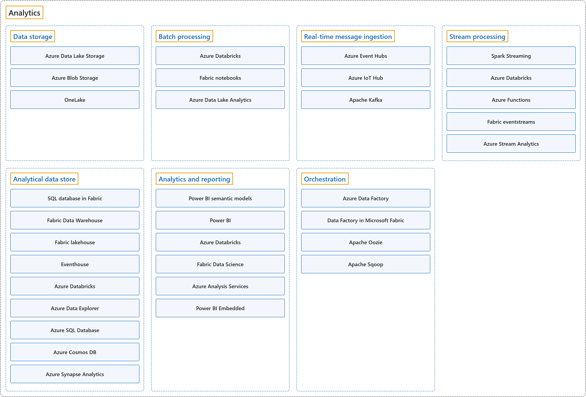

11. Analytics
Classification

Glossary
| Term | Definition | 中文翻译 | Source |
|---|---|---|---|
| Analytics 分析 |
"Big data analytics refers to the methods, tools, and applications used to collect, process, and derive insights from varied, high-volume, high-velocity data sets." | 大数据分析是指用来从多样、大量、高速的数据集中收集、处理并获得洞察的方法、工具和应用程序。 | Microsoft, n.d., "What is big data analytics?" section, para. 1 |
| Data storage 数据存储 |
"Data for batch processing operations is typically stored in a distributed file store that can hold high volumes of large files in various formats." | 用于批处理的数据通常存放在分布式文件存储中，它可以容纳各种格式的大量大文件。 | Microsoft, 2025, "Components of a big data architecture" section, list item 2 |
| Batch processing 批处理 |
"The datasets are large, so a big data solution often processes data files by using long-running batch jobs to filter, aggregate, and otherwise prepare data for analysis." | 数据集很大，所以大数据解决方案通常用长时间运行的批处理作业来处理数据文件，对数据进行筛选、聚合等准备，以供分析。 | Microsoft, 2025, "Components of a big data architecture" section, list item 3 |
| Real-time message ingestion 实时消息引入 |
"If the solution includes real-time sources, the architecture must capture and store real-time messages for stream processing." | 如果解决方案包含实时数据源，架构就必须捕获并存储实时消息，供流处理使用。 | Microsoft, 2025, "Components of a big data architecture" section, list item 4 |
| Stream processing 流处理 |
"After the solution captures real-time messages, it must process them by filtering, aggregating, and preparing the data for analysis." | 解决方案捕获实时消息之后，必须对它们进行筛选、聚合和数据准备，以供分析。 | Microsoft, 2025, "Components of a big data architecture" section, list item 5 |
| Analytical data store 分析数据存储 |
"Many big data solutions prepare data for analysis and then serve the processed data in a structured format that analytical tools can query." | 许多大数据解决方案先为分析准备数据，再以分析工具可以查询的结构化格式提供处理后的数据。 | Microsoft, 2025, "Components of a big data architecture" section, list item 6 |
| Analytics and reporting 分析和报表 |
"Most big data solutions strive to provide insights into the data through analysis and reporting." | 大多数大数据解决方案都力求通过分析和报表来提供对数据的洞察。 | Microsoft, 2025, "Components of a big data architecture" section, list item 7 |
| Orchestration 编排 |
"Most big data solutions consist of repeated data processing operations that are encapsulated in workflows." | 大多数大数据解决方案由重复执行的数据处理操作组成，这些操作封装在工作流中。 | Microsoft, 2025, "Components of a big data architecture" section, list item 8 |
Coverage
| Certification | Skill area |
|---|---|
| DP-900 Microsoft Azure Data Fundamentals | Describe an analytics workload (25–30%) |
References
- Microsoft. (n.d.). What is big data analytics? Microsoft Azure. Retrieved October 24, 2026, from https://azure.microsoft.com/en-us/resources/cloud-computing-dictionary/what-is-big-data-analytics
- Microsoft. (2025). Big data architectures. Azure Architecture Center. https://learn.microsoft.com/en-us/azure/architecture/databases/guide/big-data-architectures
- Microsoft. (2026). Study guide for Exam DP-900: Microsoft Azure Data Fundamentals. Microsoft Learn. https://learn.microsoft.com/en-us/credentials/certifications/resources/study-guides/dp-900